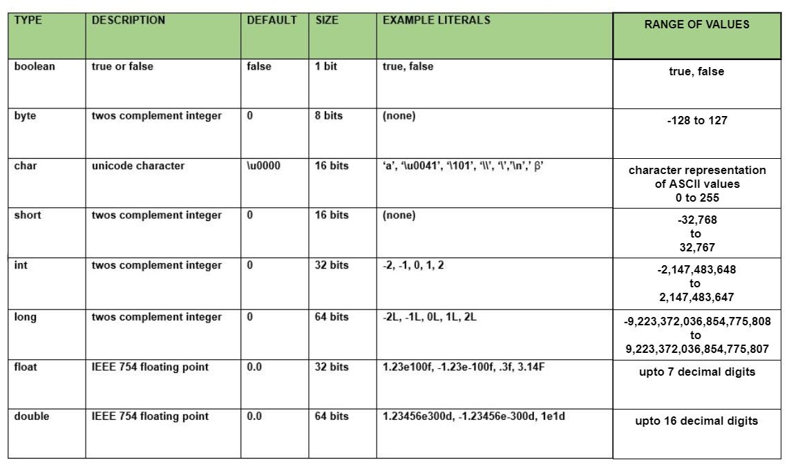

Java is an object-oriented, class-based programming language. The language is designed to have as few dependencies implementations as possible.
Java is known for its simplicity, robustness, and security features, making it a popular choice for enterprise-level applications. Java applications are compiled to byte code that can run on any Java Virtual Machine. The syntax of Java is similar to C/C++.
The term WORA, write once and run everywhere is often associated with this language. It means whenever we compile a Java code, we get the byte code (.class file), and that can be executed (without compiling it again) on different platforms provided they support Java
As shown in the image below, Java has 8 Primitive Data types that serve as the backbone of the programming language.
There are various of resources out there in the internet that can help you learn the java programming language. Including Website, Articles and even Courses Online.
And many other website out there in the internet!
Sources from: